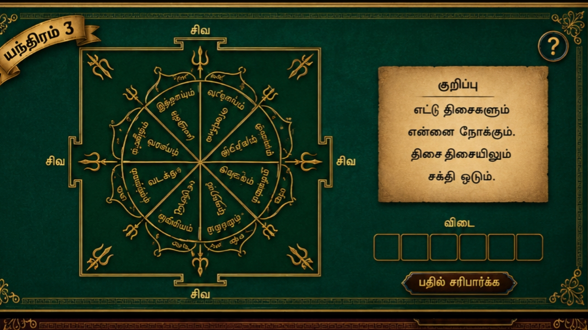
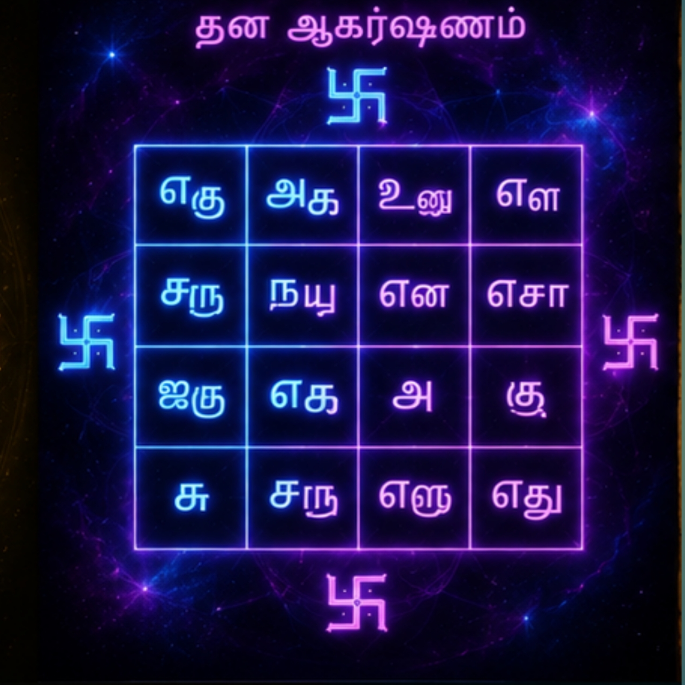

🔱 COSMIC CORE YANTRA
The central mystical yantra powering the AYMPON cosmic ecosystem and tap universe.
Symbol of cosmic fire energy, activation, transformation, and inner spiritual force.
Represents abundance, prosperity, attraction, harmony, and sacred wealth energy.
Inspired by planetary balance, celestial influence, and cosmic alignment energies.

Represents divine power, spiritual awakening, mystical vibration, and sacred force.
Mystical geometric energy artwork inspired by sacred cosmic symbolism and spiritual imagination.
The central mystical yantra powering the AYMPON cosmic ecosystem and tap universe.

Inspired by ancient sacred geometry traditions and symbolic spiritual patterns.
Sacred Digital Yantras
A growing mystical collection of sacred yantras, symbolic geometry, and cosmic digital energy forms. Future premium expansions and rare collectible yantras are planned within the AYMP ecosystem.